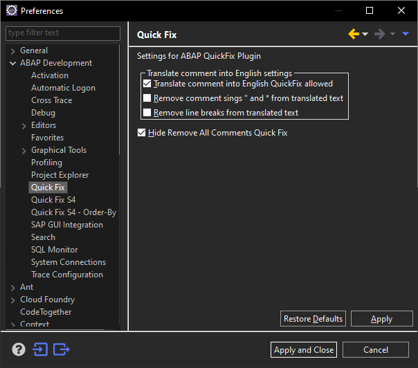

ABAP Quick Fixes - Remove All Comments
Simply deletes all comments form current editor window. Leaving pseudo comments and pragmas on place.
Can be switched off in the Preferences by using "Hide Remove All Comments Quick Fix"
